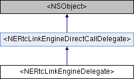

<NERtcLinkEngineDelegate>协议 参考
#import <NERtcLinkEngineDelegate.h>
类 <NERtcLinkEngineDelegate> 继承关系图:

额外继承的成员函数 | |
 构造函数 继承自 <NERtcLinkEngineDirectCallDelegate> 构造函数 继承自 <NERtcLinkEngineDirectCallDelegate> | |
| (void) | - onDirectCallRing |
| 直呼时，对端开始振铃回调。 主叫方发起直呼后，如果对端开始振铃，会触发此回调。 更多... | |
| (void) | - onDirectCallAccept |
| 直呼时，对端已接听回调。 主叫方发起直呼后，如果对端接听通话，会触发此回调。 更多... | |
| (void) | - onDirectCallAcceptWithMediaType: |
| 直呼时，对端已接听回调。 主叫方发起直呼后，如果对端接听通话，会触发此回调。 更多... | |
| (void) | - onDirectCallHangupWithReason:error:isCallEstablished: |
| 直呼时，通话已挂断回调。 以下场景会触发此回调： 更多... | |
| (void) | - onDirectCallDisconnectWithError: |
| 直呼时，通话断开连接回调。 呼叫接通后，对方断开连接时会触发此回调。 更多... | |
该协议的文档由以下文件生成:
- include/NERtcLinkEngineDelegate.h